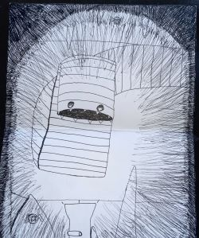
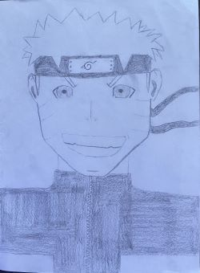
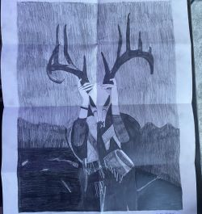
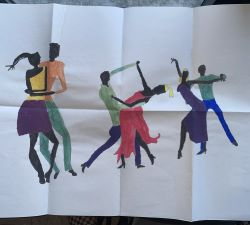
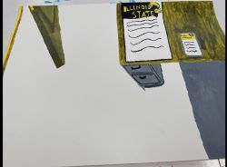
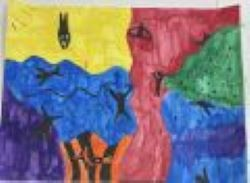
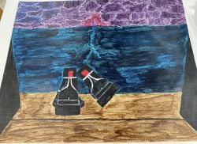

This is my first professional piece that I saved. The piece done on pen and paper, and it depicts a person spotting a large worm-like monster.

This is one of my favorite sketches from my sketchbook. The medium is pen and paper, and it shows Naruto Uzumaki.

This was for a school project in high school. This pencil and paper drawing was used to depict a creepy image of someone holding a deer skull up to their face.

This is an acrylic painting that depicts human figures dancing.

This is another acrylic painting where colors are supposed to reflect emotions. This piece is depicting how I felt getting accepted to the college I planned to attend.

This piece is made from water-paints, and it shows human figures floating around different colored areas. This was more of an attempt at abstract art.

This piece was created using acrylic paints, and it depicts a pair of boots withstanding a thunderstorm. It was originally inspired by a poem that I can not find again.